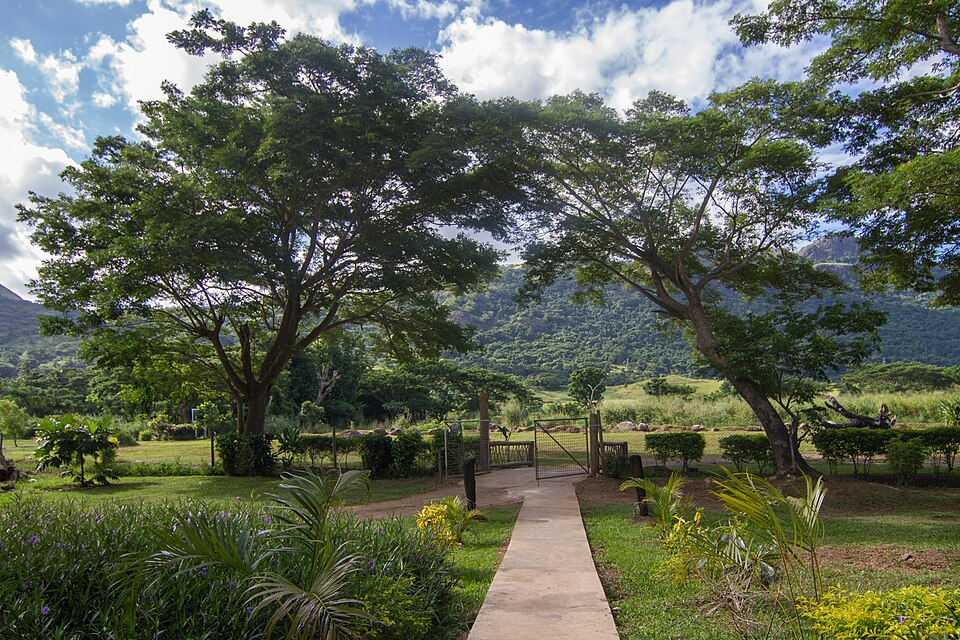
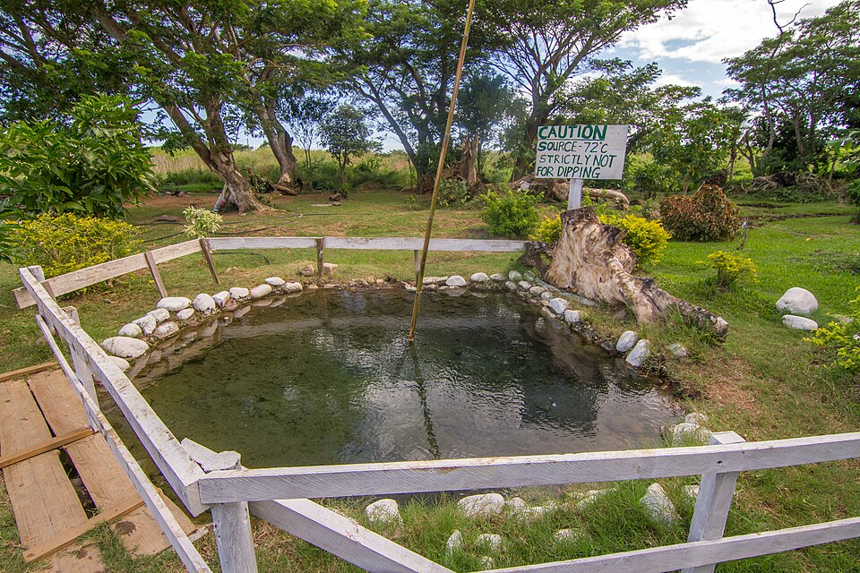

Sabeto Hot Springs
Sabeto Hot Springs and Mud Pool is a popular natural attraction near Nadi, Fiji. Visitors can experience warm geothermal mud pools and hot spring water in a tropical setting. It is a unique destination for people interested in nature and local experiences.

